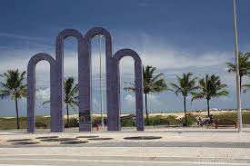

Na orla de atalaiaexiste opções de lazer como bares e casas de danças e músicas,além de barracas de água de coco e quadras de basquete
futebol, tênis e uma pista de skate. Considerada uma das mais
bonitas do Brasil
oferece aos cidadões e turistas o que há de melhor em lazer e entretenimento.
Roteiro Turistíco em 1 Dia
- Café da manhã em uma das barracas da orla.
- Camimhada até os Arcos da Atalaia para fotos.
- Visita ao Oceanário de Aracaju (Projeto Tamar).
- Almoço com frutos do mar.
- livre para banho de mar e esportes.
- Fim de tarde com água de coco observando o pôr do sol.